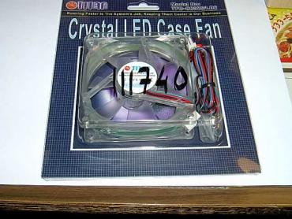
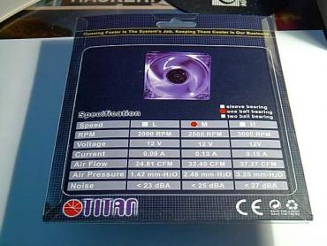
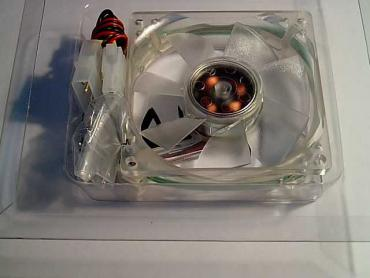
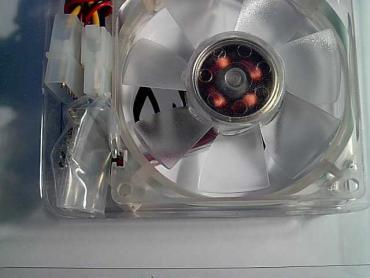
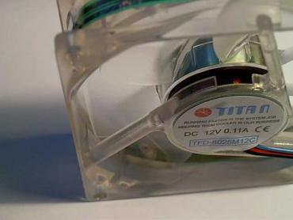
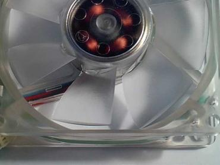
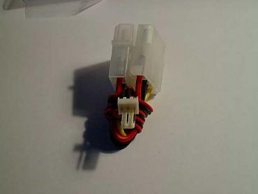
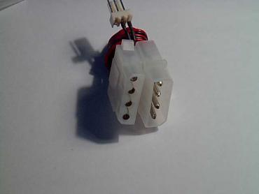
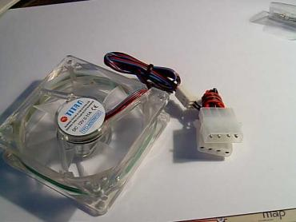
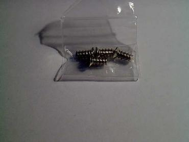

Titan TFD-C8025/LD2 Fan
Kaip žinote, nelabai seniai (gal prieš 3 mėnesius), buvau parašęs šaunų straipsnį apie FanBus'o gaminimą namuose. Tačiau tame straipsnyje nieko nebuvo parašyta apie aušintuvus. Taigi nusprendžiau ištaisyti šią baisią klaidą - Jūsų dėmesiui pristatau TITAN TFD-C8025/LD2 aušintuvo aprašymą.
Prie reikalo
Pateiksiu šio puikaus aušintuvo parametrų lentelę:
- Greitis: Vidutinis
- RMP: 2500 RPM
- Įtampa: 12 V
- Stipris: 0.13 A
- Oro pralaidumas: 32.4 CFM
- Oro spaudimas: 2.48 mm-H2O
- Garsas: 25 dBA
Išorinis vaizdas
Jeigu bent kažką nusimanote aušintuvuose ar fizikoje, turėjote pilnai suprasti mano pateiktą lentelę. Jei supratote, ramia sažine galime skaityti toliau, jei ir nesupratote skaitykite toliau, gal vėliau suprasite. O dabar pateiksiu detalias aušintuvo fotografijas:
         
Trumpi paaiškinimai
Dabar pasitengsiu paaiškinti kelias naudingas šio aušintuvo smulkemas.Visų pirma, kaip matote, jis yra pagamintas iš skaidraus plastiko. Jeigu bent kartą esate matę skaidrų aušintuvą, galite spėti, kodėl jis pagamintas butent skaidrus. Taip taip,Jūs atspėjote, jis šviečia mėlyna šviesa, o tai labai didelis privalumas šiam aušintuvui. Dar vienas privalumas, kad aušintuvo pakuotėje yra reikiami priedai: keturi varžtai ir Molex - 3 pinų male konverteris. Būtent šio konverterio pagalba aušintuvą galima prijungti tiesiai prie maitinimo bloko molex jungties.
O dabar pabandysiu paaiškinti, aušintuvo "vidinio grožio" subtilybes, t.y. jo galimybes, o tiksliau - aukšiau pateiktos lentelės duomenis. Taigi, manau žodį vidutinis visi gerai suprantate, bet kai kam gali būti neaiškus sutrumpinimas RPM, tai yra sutrumpinimas angliškos frazės "Revolutions Per Minute" (apsisukimai per minutę), kuri parodo kiek aušintuvas sugeba sukurtį apsukų per minutę. Dabar apie įtampą ir stiprį, jei nors truputį atsimenate 9 klasės fizikos kursą, šie du elektros srovės matavimo vienetai turėtų būti Jums gerai pažystami. Jų aš tikrai neaiškinsiu, nes šių vienetų apibrėžimai yra labai painūs ir jei to neišmokote ankščiau, neišmoksite niekada.
Oro pralaidumas - tai oro kiekis, kuri aušintuvas pratraukia pro save per minutę. Oro slėgis - slėgis kurį sukelia aušintuvas pratraukdamas orą, o garsas - reiškia garso stiprumą, kurį sukelia aušintuvas veikdamas optimaliu greičiu.
Happy End
Rašydamas šį straipsnį jaučiau didelį norą nufilmuoti ši puikų aušintuvą veikime, bet po ranka nepasitaikė niekas, kas sugebėtų filmuoti. Ačiū DIEVUI, ankščiau buvau paruošęs kelis fanbus filmukus, kuriose kaip tik ir yra naudojamas šis aušintuvas .. Tuos filmukus galite atsisiųsti iš čia!


{kind=link}
{kind=link}
{kind=link}
{kind=link}
{kind=link}
{kind=link}
{kind=link}
{kind=link}
{kind=link}
{kind=link}